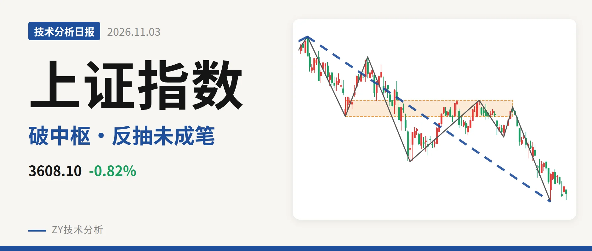
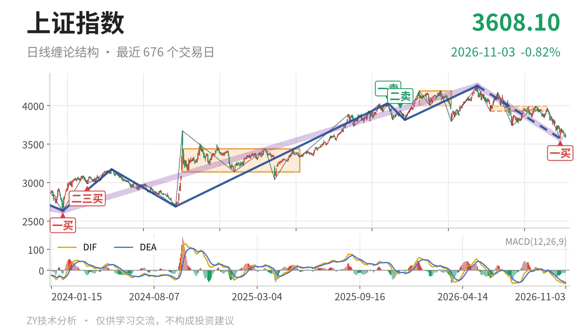
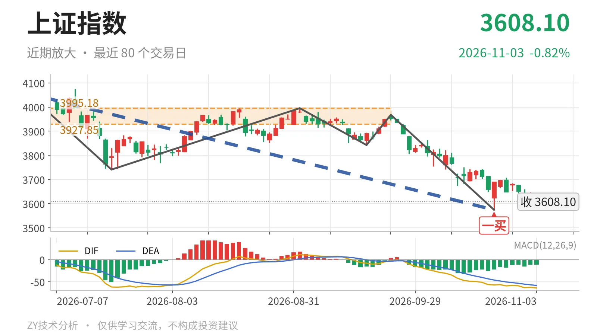

上证指数｜失守3928中枢，3574一买后反抽未成笔

最近日线中枢 3927.85—3995.18点，收盘位于中枢之下
一句话：反抽未站回3928点，中枢下方偏弱，3574一买后待观察
📉 走势结构：更大级别上涨中的回落，日线下跌未结束
当前仍处在更大级别上涨段的回落段里，日线下跌段没有结束。由线段构成的更大级别走势中，2024年2月5日至2026年5月14日的上涨段从2635.09点升至4258.86点，结构未被破坏；5月14日至10月23日的下跌段从4258.86点压至3574.27点，还在延续。最近这段日线下跌线段内含7笔，10月26日至11月3日虽最高反抽到3708.20点，但只有7根K线，还未形成日线向上笔，下跌结构没被反向改写。

📍 中枢与位置：最新价处于最近中枢下方
最新价已跌出最近日线笔中枢，中枢位置向下移。6月8日至9月22日的日线笔中枢区间为3927.85—3995.18点，中轴3961.51点，仍在形成中；最新收盘3608.10点低于下沿约8.1%。对比1月14日至3月23日的4002.78—4190.87点中枢，当前中枢下移至3928—3995点区间，价格在中枢下沿下方运行，短线没有回到中枢内部。
🧭 买卖点：10月23日一买已落定，反抽未成笔
10月23日出现日线一买3574.27点，该点对应9月22日至10月23日下跌笔的末端，这笔已经结束。随后的反抽最高到3708.20点，最低3580.38点未再创新低，但也未构成日线向上笔。2025年11月14日一卖4034.08点、2025年12月8日二卖3936.31点之后，价格一个比一个低，当前仍处在卖点后的回落结构之中。

⚡ 背驰：价格新低而DIF未同步，面积未配合
最关键的一组同向对比是6月23日至7月20日下跌笔与9月22日至10月23日下跌笔。后者把低点从3741.11点带到3574.27点，价格创了新低；DIF低点由-61.8升至-57.1，没有同步创新低，属于局部“新低不新弱”。但绿柱面积由289扩大到347，说明空头动能没有真正衰竭，这不是标准趋势背驰。最新DIF为-64.0，在零轴之下且已低于-57.1，指标维度仍未转强。
🔎 关键位置：回抽3928点的得失决定中枢性质
弱在三点：价格位于最近中枢下方、反抽尚未成笔、DIF仍在低位。后续若反抽不能重新站上3928点一线，则构成对6月8日至9月22日中枢的第三类卖点结构；若重新站上3928点，则下跌更可能只是中枢扩展。下方3574点若被跌破，10月23日一买对应的转折结构就失效，日线下跌段还会延续。短线结构偏弱。
⚠️ 本文为基于公开行情数据的缠论技术结构记录，由程序自动计算并生成，仅供学习交流，不构成任何投资建议。市场有风险，投资需谨慎。